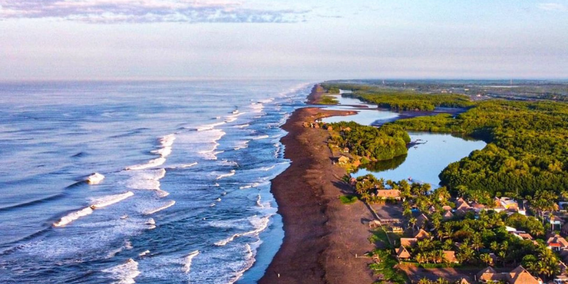
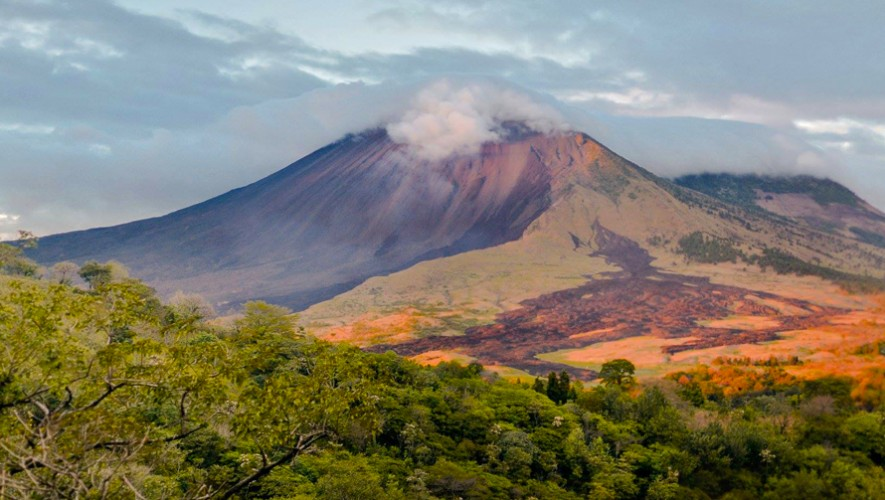
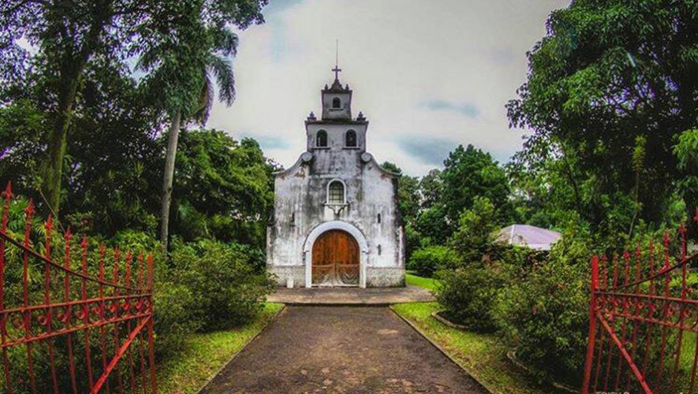
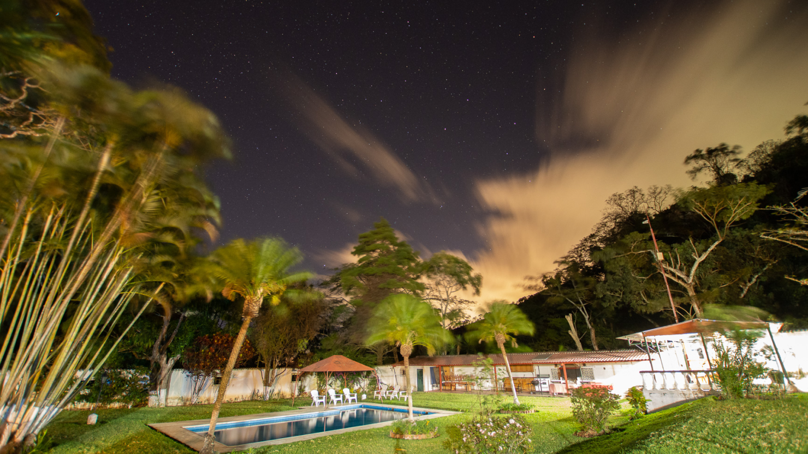
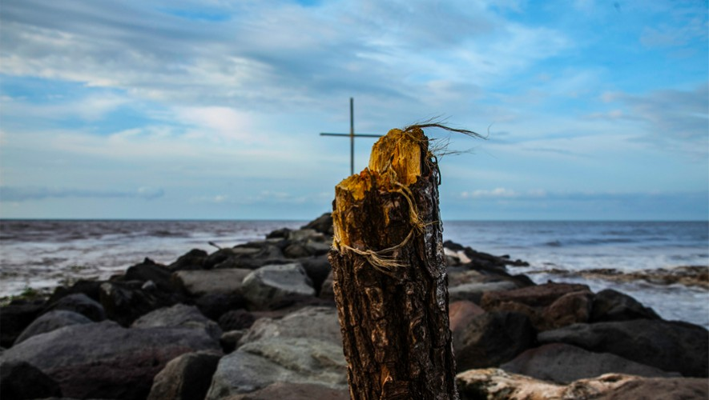

Su geografía está marcada por varias cordilleras, selvas tropicales y humedales, lo que lo convierte en un paraíso tanto para la flora como para la fauna. El departamento también alberga varios yacimientos arqueológicos, entre los que destacan las ruinas mayas de Takalik Abaj.
Escuintla posee una rica cultura y alberga una gran variedad de pueblos y culturas indígenas, como los mam, los xincas y los garífunas. El departamento es conocido por sus vibrantes festivales, danzas tradicionales y gastronomía local. Además, es un importante centro comercial del país y cuenta con varias industrias prósperas, como la agricultura, la manufactura y el turismo.
Escuintla se encuentra en la región costera del sur de Guatemala, a una altura promedio de 347 metros sobre el nivel del mar, lo que la hace muy calurosa.
1 / 5

Parque Nacional Sipacate Naranjo
El Parque Nacional Sipacate Naranjo protege uno de los remanentes de bosque de mangle mejor conservados en la costa sur de Guatemala, el cual constituye uno de los ecosistemas más importantes para la productividad y biodiversidad de la región.
2 / 5

Volcán de Pacaya
Este hermoso volcán se encuentra ubicado entre los departamentos de Guatemala y Escuintla, muy cercano a la capital. El volcán de Pacaya es un complejo en donde existen otros picos del sistema y no solamente el cono que está activo. Cuenta con una altura de 2550 msnm y para subirlo se toma aproximadamente 1 hora con 45 minutos.
3 / 5

Museo Las Ilusiones
Museo privado exhibe piezas que fueron encontradas en la costa sur de Guatemala. Vas a observar esculturas talladas en piedra, piezas de cerámica, réplicas de esculturas encontradas que no pudieron ser movilizadas por su tamaño.
4 / 5

Finca El Barretal
Si estás buscando un lugar para hacer actividades extremas, esta es una muy buena opción. Puedes observar las cascadas, caminar por los senderos, hacer el tour de café, ir a los nacimientos de agua y mucho más. Ideal para practicar cualquier tipo de deporte al aire libre como ciclismo, caminatas, entre otros. Su mayor atractivo es hacer rappel en la catarata Casa Blanca.
5 / 5

Playa de Iztapa
La playa de Iztapa se caracteriza por sus colores brillantes, sus aguas calmadas y lo lindo del paisaje. Es un buen lugar para practicar surf, así que si quieres una aventura extrema, ya sabes dónde vivirla.
❮
❯